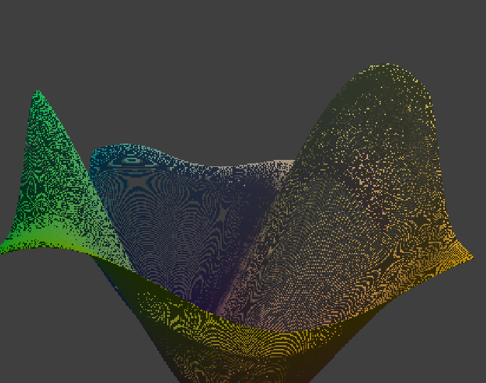
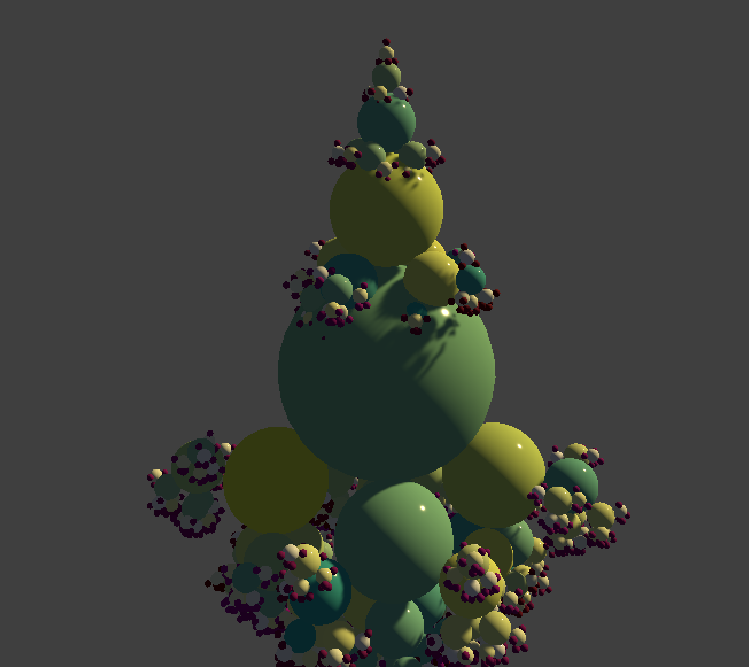
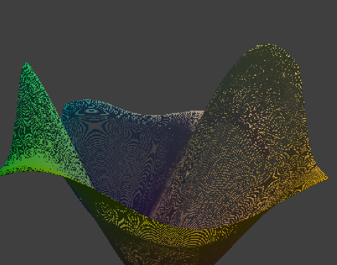
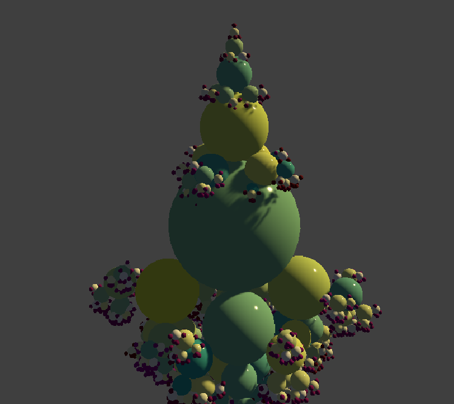

Shader Learning
This project is about learning how to create shaders in Unity. I stated by following the tutorial from the YouTube of Freya Holmér introduction to shaders. Then i started following the page Catlike Coding to learn more about shaders, noises and GPU render.
Here are some images from the project:
 



You can follow the progress of the project on this issue: Progreso.